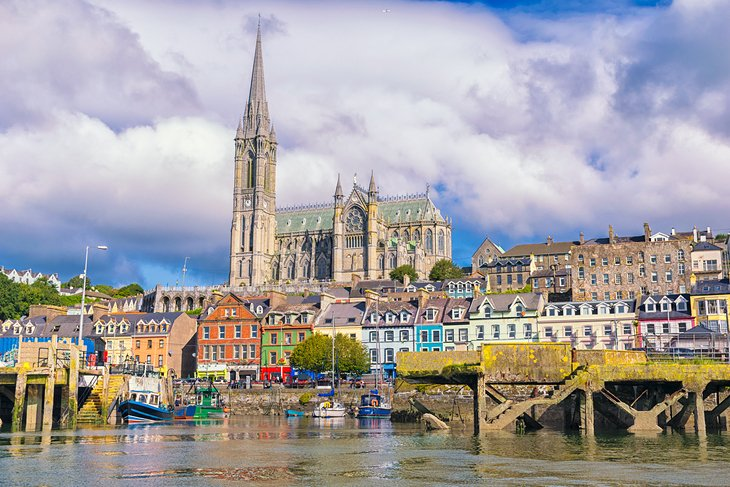
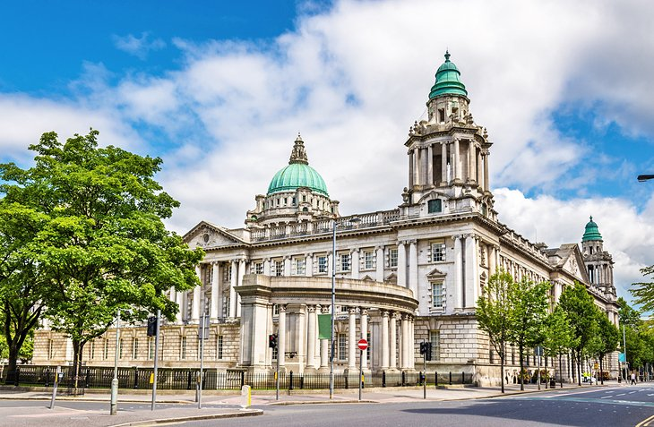
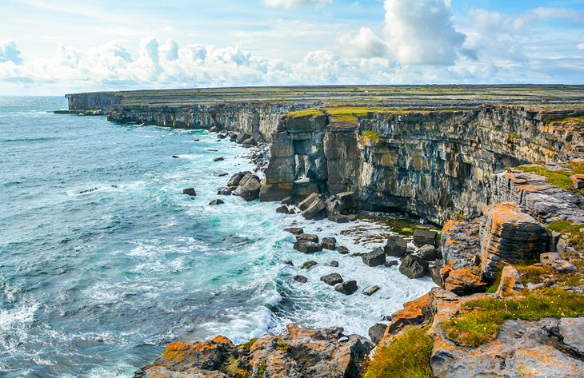

Republic of Ireland (Poblacht na hÉireann),[a] is a country in north-western Europe consisting of 26 of the 32 counties of the island of Ireland. The capital and largest city is Dublin, which is located on the eastern side of the island. Around 40% of the country's population of 5 million people resides in the Greater Dublin Area.[10] The sovereign state shares its only land border with Northern Ireland, which is part of the United Kingdom. It is otherwise surrounded by the Atlantic Ocean, with the Celtic Sea to the south, St George's Channel to the south-east, and the Irish Sea to the east. It is a unitary, parliamentary republic.[11] The legislature, the Oireachtas, consists of a lower house, Dáil Éireann, an upper house, Seanad Éireann, and an elected President (Uachtarán) who serves as the largely ceremonial head of state, but with some important powers and duties. The head of government is the Taoiseach (Prime Minister, literally 'Chief', a title not used in English), who is elected by the Dáil and appointed by the President; the Taoiseach in turn appoints other government ministers.
Dublin

No trip to Ireland is complete without a stop in its lively capital. The biggest city in Ireland, Dublin is actually small when compared with other capitals. What it lacks in size and population, however, it makes up for with a large (and long) history, and an intimacy you won't find in other metropolitan cities. Dublin isn't the most beautiful city, but what it lacks in cleanliness, it makes up for in effervescence. The laid-back vibe and cobblestone streets at the heart of this vibrant spot make it a truly magical place. The locals (and if you're uber lucky, Bono) will be happy to chat you up if you stop for a "convo." Then they'll direct you to learn more about the city's expansive history in its stellar museums (like the unique and unforgettable Kilmainham Gaol, EPIC The Irish Emigration Museum, and The Little Museum of Dublin). Don't miss the breathtaking Christ Church Cathedral or iconic Dublin Castle.
Attraction
|

Cork |

Belfast |

Aran Islands |